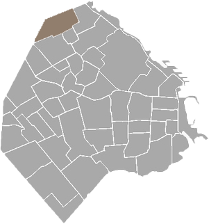

TU PORTAL DEL BARRIO
Saavedra es un tradicional barrio de la Ciudad Autónoma de Buenos Aires ubicado en el extremo norte de la misma. Está comprendido por las calles Av. General Paz, Av. Cabildo, Galván y Crisólogo Larralde. Limita con los barrios de Núñez al noreste y Coghlan y Villa Urquiza al sur, y con las barrios de Villa Martelli y Florida al norte, ambos del Partido de Vicente López.
En 1864, Don Luis María Saavedra comienza a formar su propio establecimiento en el paraje conocido por Saavedra y compra 185 hectáreas. Este campo fue creciendo por sucesivas compras, llamado las chacras o la estancia de Saavedra y construirá a partir del año 1870 una amplia mansión con 14 habitaciones en su cuerpo principal. Al fallecer en el año 1900 sus chacras habían alcanzado una extensión de 350 hectáreas y para 1908 la Municipalidad aprueba la compra del Parque o Lago de Saavedra.
La familia contribuyó al progreso del barrio donando los lotes necesarios para la construcción de la Estación Ferroviaria que llevará su nombre pero en homenaje a su hijo varón homónimo fallecido siendo un niño1. Los campos y fincas que aún poseían los descendientes de Luis María Saavedra, pasarán a ser propiedad del Estado por ley Nº12.336 del 21/12/1936 con el objeto de destinar la parte ubicada en esta capital a parque público.